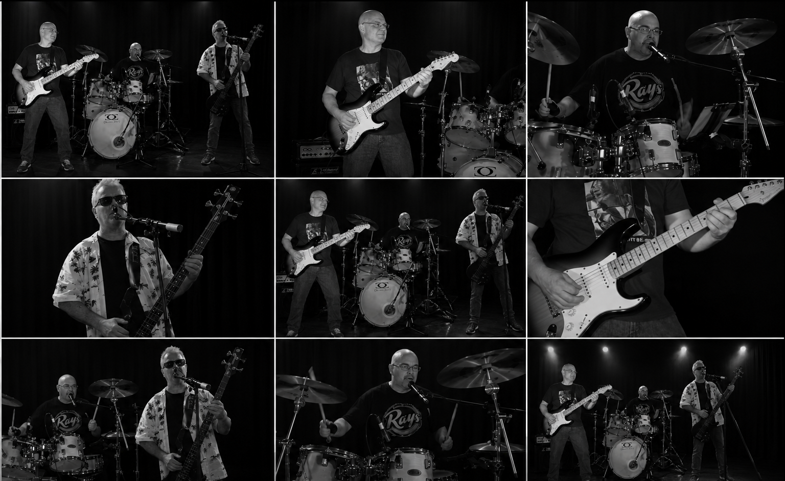
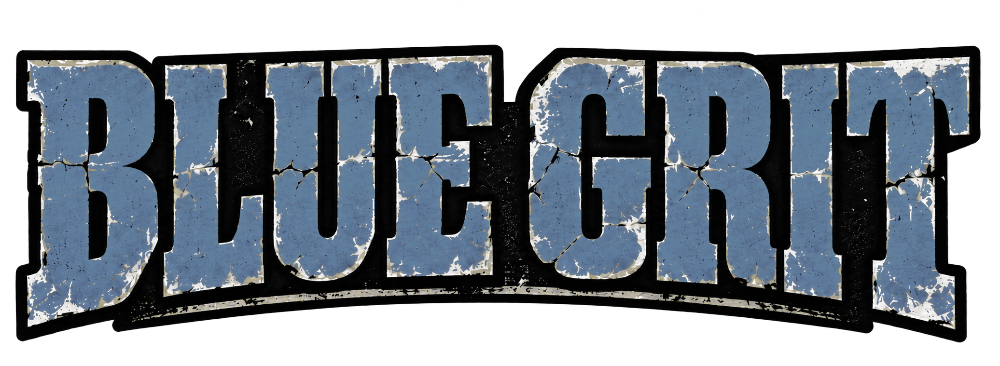
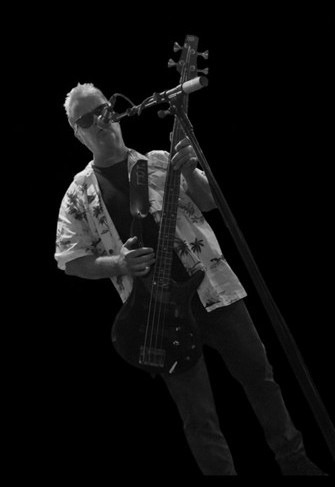
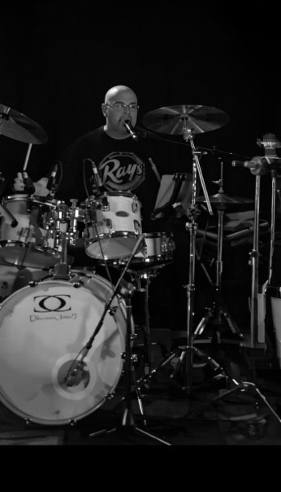

Blue Grit delivers edgy blues and rock with raw power, tight musicianship, and no-nonsense attitude. Blending gritty blues grooves with driving rock riffs, the band brings a punchy, high-energy sound that hits hard and leaves a mark. From smouldering slow burns to full-throttle anthems, Blue Grit captures the spirit of classic blues rock and cranks it up with sharp edges and modern bite. If you like your blues loud, your rock bold, and your live music unapologetically real, Blue Grit brings it every time.
Lars on lead.
Lars drives the sound of Blue Grit with searing lead guitar work that blends blues soul with hard-edged rock intensity. His playing moves effortlessly from gritty, expressive bends to fiery, high-energy solos, giving the band its sharp, unmistakable edge. With tight phrasing, dynamic control, and a feel for when to hold back or let rip, Lars anchors Blue Grit’s signature edgy blues and rock sound.

Rich on Bass
Rich is the engine room of Blue Grit, locking down the low end with deep, driving bass lines that give the band its punch and groove. Blending blues feel with rock-solid rhythm, his playing is tight, powerful, and always in the pocket. Whether laying down a steady backbone or adding melodic runs that lift the energy, Rich keeps Blue Grit grounded, gritty, and moving forward.

Ian on Drums
Ian anchors Blue Grit on drums and vocals, driving the band with powerful rhythms and commanding presence. From behind the kit, he delivers tight, hard-hitting grooves that fuse blues feel with rock intensity, while his vocals add grit, character, and authority to the sound. Whether pushing the tempo or digging into a deep shuffle, Ian keeps Blue Grit locked in, loud, and unapologetically edgy.